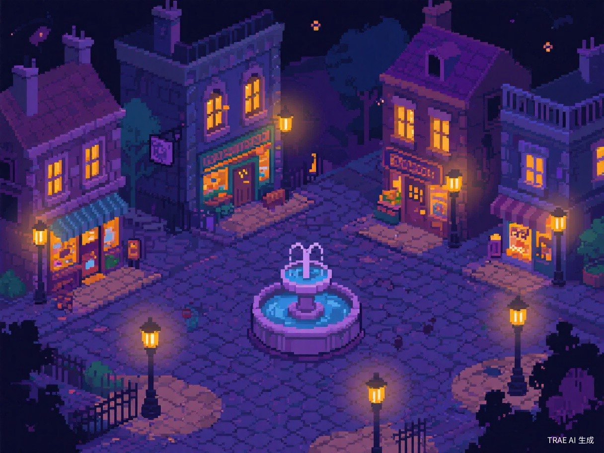
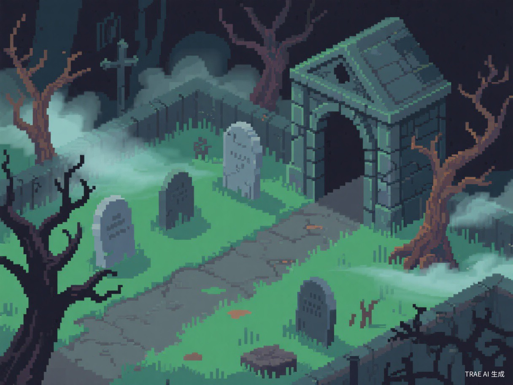
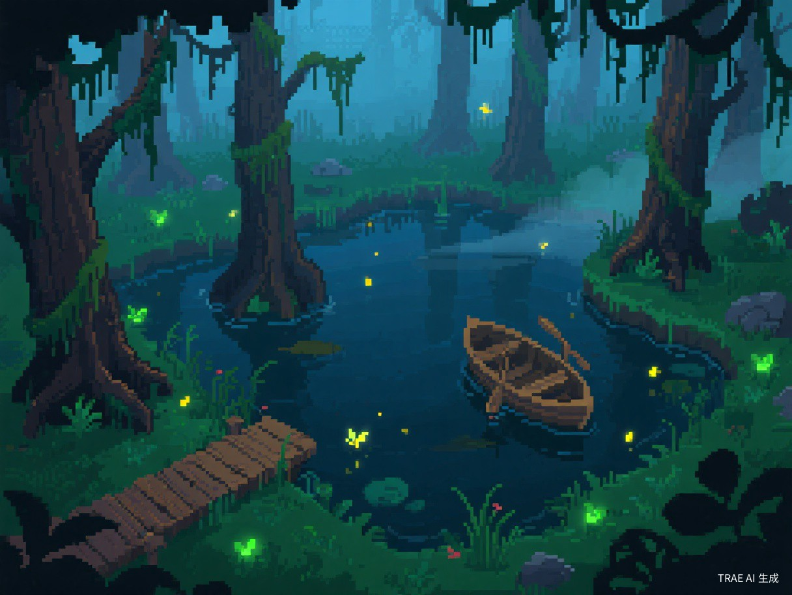
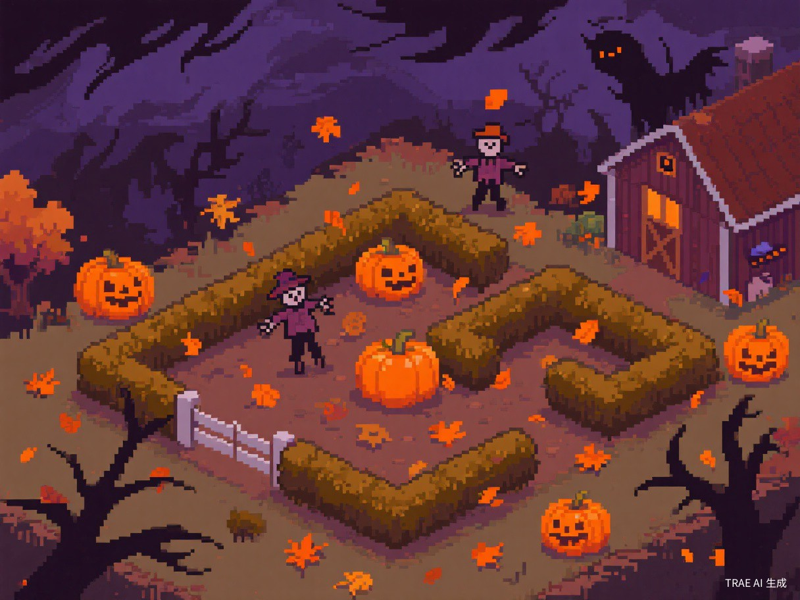
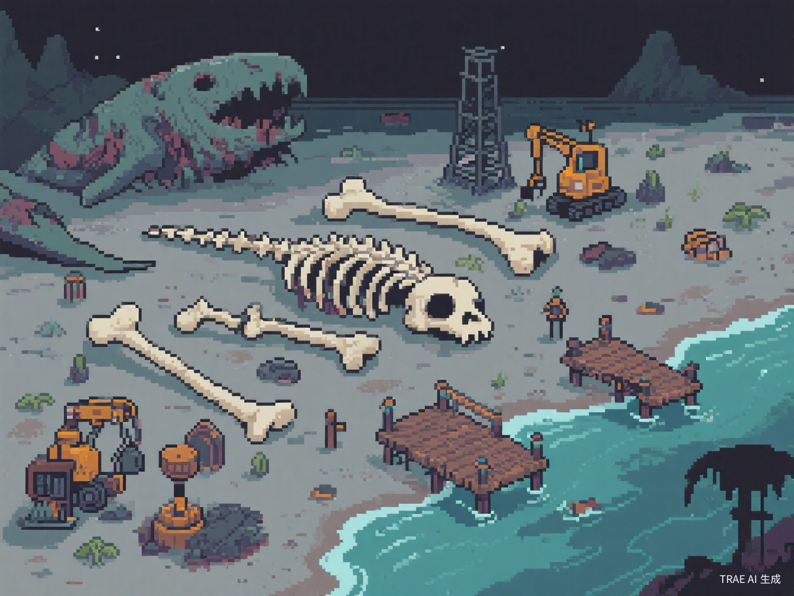
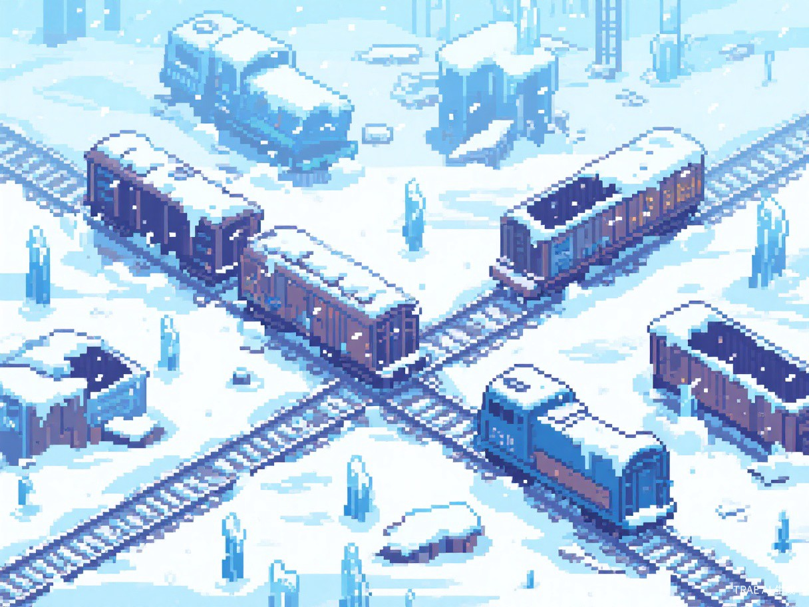
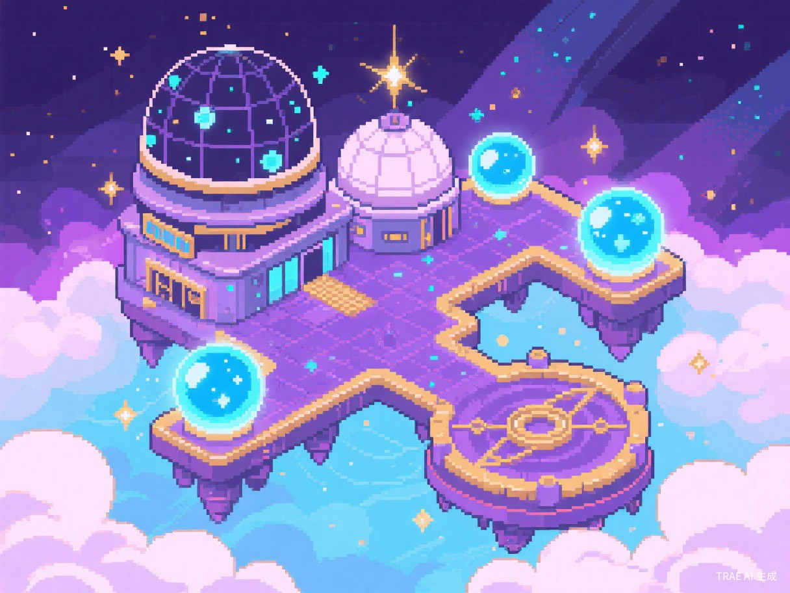

Key Points
- ✓ Tenebrous Isle has 7 distinct areas: Ossex hub + 6 dungeons
- ✓ All areas can be explored in any order - fully non-linear
- ✓ Ossex provides shops, Underlabs, and fast travel options
- ✓ Each dungeon has unique mechanics and boss encounter
- ✓ No ability gates or required sequence - explore freely
Tenebrous Isle
The dark and mysterious game world
The World of Tenebrous Isle
Tenebrous Isle is a gothic, interconnected open world that serves as the setting for Mina the Hollower. The island is divided into 7 distinct areas, each with its own unique theme, enemies, and challenges. Unlike traditional Metroidvanias, the game is fully non-linear -- there are no item gates or required sequence breaks. You can tackle any area in any order you choose.
The central hub town of Ossex connects to all other areas and provides essential services including shops, save points, and story progression through the in-game newspaper. As you explore deeper into the isle, you will uncover shortcuts, secrets, and lore that paint a picture of the island's dark history.
Main Objective: Mina must repair 6 Spark Generators located throughout the island's dungeons. These generators were designed to bring electricity and prosperity to Tenebrous Isle, but have fallen into disrepair. As Mina investigates, she discovers darker secrets about the generators' true purpose and the forces that seek to control them.
Non-Linear Exploration
The 6 dungeon areas beyond Ossex can be tackled in any order. There are no ability locks or required items to access any area. Feel free to explore wherever interests you, and return to tougher areas after gaining more power through upgrades.
All Areas
Detailed guides for each region of Tenebrous Isle

Central Hub TownOssex
Central HubOssex serves as your home base and the central hub of Tenebrous Isle. This gloomy settlement is where you will find all the essential services for your adventure: shops for buying and upgrading weapons, a Trinket merchant, consumable vendors, and access to the Underlabs where you spend Bones on permanent stat boosts. The town also publishes a newspaper that dishes out lore snippets, gameplay hints, and updates as you progress through the story.
From Ossex, pathways branch out to every one of the six dungeon regions, so it is the natural place to return to whenever you need to restock supplies, spend your Bones, or plan your next destination.
Shops & Services
General Store
"Purchase items here, but be careful - the price of the next item will increase."
Trinket Shop
"The many headed weirdo sells Trinkets. If you have more Trinkets, she may show you her special collection."
Weapon Shop
"Buy weapons here. You get a discount on the first one!"
Kear Shop
"Kears make the world go round and unlock all sorts of things. Buy them here from preeminent Kear economists."
Pawn Shop
"If you don't want an item or need some quick Bones, you could always pawn some of your stuff. You could always buy it back later!"
Train Station
"The train would let you travel quickly, but it's out of commission, and getting a new train car won't be cheap."
Tavern
"Locals just love the tavern. Go have a good time, why don't ya!"
Tips for Ossex
- Check the newspaper regularly for new hints and shop inventory updates
- The Pawn Shop lets you sell unwanted items for Bones and buy them back later
- The Train Station provides fast travel once you acquire new train cars
- The Trinket Shop vendor may show special collections if you own more Trinkets
- General Store prices increase with each purchase - plan your buying accordingly
- Weapon Shop offers a discount on your first weapon purchase

Cemetery DungeonQueensbury Crypt
DungeonQueensbury Crypt is a graveyard-themed dungeon blanketed in gloom. Crumbling headstones, decaying architecture, and shambling undead fill its corridors, while something far more sinister lurks in the deepest chambers. The atmosphere is thick with gothic dread, from the twisted stonework to the eerie ambient details woven into the environment.
The area culminates in a boss encounter against The Duchess of Queensbury, an eldritch monstrosity dwelling in the crypt's lowest level. Defeating her requires solid command of the burrow mechanic, as her attacks blanket large portions of the arena and leave little room to dodge above ground.
The Queensbury Crypt was once a peaceful cemetery where mourners from all parts of Tenebrous Isle found solace. That quiet peace was shattered when monsters began rising from their graves. The superstitious blame the overfilled cemetery, while others point to the Spark Generators' sudden malfunction as the source of the darkness.
- Cemetery and graveyard theme
- Undead enemy types
- Gothic architecture and tombstones
- Boss: The Duchess of Queensbury
- Eldritch horror atmosphere
Tips for Queensbury Crypt
- Use the burrow to dodge the Duchess's wide-area attacks
- Watch for tells before ground-targeted attacks
- Explore side paths for hidden Trinkets and Keygears
- Undead enemies may be weak to certain weapon types

Swamp AreaNox's Bayou
DungeonNox's Bayou is a semi-settled swamp reachable by boat not far outside of Ossex. Outsiders must be careful lest they sink into the bog and never surface again. The area features uneven ground, noxious deep water, and unfriendly flora and fauna. Lately, there have even been reports of an enormous predator lurking in the area, making navigation even more perilous.
Getting around the bayou involves plenty of platforming across open water and threading through dense undergrowth. The burrow ability is particularly handy here -- it lets you travel safely beneath submerged sections and slip past swamp hazards that would otherwise block your path.
- Swamp and bayou environment
- Boats and lilypads for traversal
- Murky water hazards
- Dense vegetation and wooden walkways
- Aquatic and insectoid enemies
- Boss: Nox Beast
Tips for Nox's Bayou
- The burrow can help navigate underwater sections safely
- Look for breakable objects near the water's edge for Sidearms
- Some paths may only be accessible by burrowing under obstacles
- Be cautious of enemies lurking just below the water surface

Autumn/Halloween AreaSeptemburg
DungeonSeptemburg is a region locked in perpetual autumn, where crisp air and freshly fallen leaves conceal secrets both tantalizing and terrifying. Crops have taken on a life of their own, with some beginning to merge with forest wildlife, birthing unusually aggressive monstrosities. Peaceful farmers have succumbed to paranoia, fighting off tourists and turning unsuspecting folk into scarecrows. Even the weather feels discordant, with howling winds and bouts of lightning becoming increasingly commonplace.
Navigating the hedge mazes is a puzzle in itself -- the correct route is rarely obvious, and wrong turns can lead you in circles. Scarecrows scattered throughout the area may come to life as enemies or function as environmental traps, and the periodic lightning strikes seem to interact with the gameplay in ways that reward observant players.
- Autumn and Halloween theme
- Hedge maze navigation
- Dynamic lightning strikes
- Scarecrow enemies/hazards
- Orange and purple color palette
- Boss: Maxi
Tips for Septemburg
- Pay attention to lightning flashes -- they may reveal hidden paths
- Mark your path through hedge mazes to avoid getting lost
- Scarecrows may have attack patterns tied to lightning timing
- Explore thoroughly -- hedge mazes often hide valuable secrets

Beach Mining TownBone Beach
DungeonBone Beach is a mining town that has grown around a gargantuan decomposing creature. In a world where bones are currency, a beach laden with carcasses is like striking gold. It is a dangerous place, and navigating it will take you inside the creature and out. Local miners don't want you meddling, and viruses and other critters have set up camp too.
Conveyor belts are the defining traversal element here. They shuttle materials (and Mina) from one section to another, doubling as both a movement tool and a potential hazard if they carry you straight into danger. The mining theme hints at pickaxe-wielding foes and ore-related collectibles to discover.
- Mining town inside a giant creature
- Conveyor belt traversal mechanics
- Industrial mining aesthetic
- Organic cave architecture mixed with structures
- Unique interior-of-a-creature environment
- Boss: Madd House + Miner Dwarf Boss
Tips for Bone Beach
- Use the burrow to escape conveyor belts carrying you toward hazards
- Conveyor direction can be used strategically for speedruns
- Look for breakable walls near conveyor endpoints for hidden rooms
- The interior environment may have organic weak points to burrow through

Ice/Snow AreaFrozen Trainyard
DungeonFrozen Trainyard is a frigid wasteland that Mina reaches by traveling north on a train. It is a graveyard of overturned railcars, fraught with icy enemies and the ghosts of passengers who linger after a terrible accident. The standout mechanic here is fragile ice -- certain floor tiles crack and collapse after you step on them, creating tense, Celeste-inspired platforming puzzles.
Because some tiles can only be crossed once before giving way, navigation becomes a careful exercise in planning. You may need to identify which platforms are safe, which are temporary, and whether burrowing underground can bypass a fragile section entirely. The slippery ice physics add another layer of challenge, affecting both Mina and the enemies that inhabit the trainyard.
- Ice and snow environment
- Fragile ice tiles (Celeste-like puzzles)
- Trainyard industrial setting
- Frozen tracks and platforms
- Slippery surface physics
- Boss: Brain Boss + Snow Mountain Bosses
Tips for Frozen Trainyard
- Plan your route carefully -- ice tiles may only hold once
- The burrow can bypass fragile ice sections entirely
- Look for solid ground markers to identify safe paths
- Ice physics may affect enemy movement too -- use this to your advantage

Cosmic InstallationAstral Orrery
DungeonAstral Orrery is a mysterious installation floating high above Tenebrous Isle, on the edge between worlds known and unknown. Its Spark Generator naturally reacts with the Astral Ore buried in the valley below, causing the entire installation to float sparkmagnetically in perfect equilibrium. Little is known about the Scholars who reside inside its heliocentric halls, or what they are researching.
With its late-game feel, the Astral Orrery is expected to test everything you have learned so far. The platforming is likely among the most demanding in the game, and the enemies encountered here may include types unique to the cosmic setting. Scholars and sparkmagnetics tied to the orrery's purpose hint at deeper lore connections waiting to be uncovered.
- Floating astronomical installation
- Cosmic and celestial theme
- Zero-gravity or reduced gravity sections
- Clockwork and planetary mechanics
- Otherworldly visual design
- Boss: Congulant (one of the toughest fights)
Tips for Astral Orrery
- Consider tackling this area later when you have more upgrades
- Floating platforms may require precise burrow timing
- Cosmic enemies may have unusual attack patterns -- observe before engaging
- Look for astronomical alignments that could reveal secret paths
Western Wilds
TransitionWestern Wilds is a transition area that connects Ossex to the Molten Foundry via the Occupied Bridge. This rugged wilderness region features open terrain and serves as the gateway to the western reaches of Tenebrous Isle. The Occupied Bridge within this area is controlled by hostile forces, adding combat challenges to the traversal.
- Transition area connecting Ossex to Molten Foundry
- Contains the Occupied Bridge (hostile-controlled)
- Open wilderness terrain
- Connection path: Western Wilds → Occupied Bridge → Molten Foundry → Upper Ossex
Molten Foundry
TransitionThe Molten Foundry is a high-temperature smelting facility area that serves as a transition zone between the Western Wilds and Upper Ossex. This industrial region features significantly higher enemy density than preceding areas, with enemies configured around the smelting facility theme. The terrain is complex, combining platform jumping sections with dangerous heat wave traps that test players' mastery of movement under environmental pressure.
- High-temperature smelting facility theme
- High enemy density (notably more than preceding areas)
- Platform jumping sections
- Heat wave traps
- Complex terrain with environmental hazards
- Connection: Western Wilds → Occupied Bridge → Molten Foundry → Upper Ossex
Upper Ossex
Town UpperUpper Ossex is the upper district of the main town, accessible through the Molten Foundry. This area features a more diverse range of enemy types compared to the foundry, with a noticeably slower pacing that serves as a rhythm adjustment zone. The upper district provides additional exploration opportunities and connects to further areas of Tenebrous Isle.
- Town upper district area
- More diverse enemy types than Molten Foundry
- Slower pacing -- rhythm adjustment zone
- Additional exploration and secrets
Kindlewood / Overgrowth
ExplorationKindlewood / Overgrowth is a jungle-themed exploration area on Tenebrous Isle. Dense vegetation and overgrown paths characterize this region, offering a distinct visual and gameplay contrast to the industrial and gothic areas of the island. Details about specific enemies, mechanics, and connections are still being documented.
- Jungle / overgrowth theme
- Exploration-focused area
- Dense vegetation environment
Hollowers' Guild
Key LocationThe Hollowers' Guild is a critical functional area essential for progression. Located to the right of Ossex's main gate, the entrance is hidden -- you must break boxes on the building's right side to find a way in. Inside, you'll find Muriel who provides information about Rhene's capture.
After rescuing Rhene from the southern outskirts and escorting her back to the guild, Drillhardt can be summoned by attacking the vines blocking his room 3 times. Drillhardt sells the map for 500 Bones and an enhanced version for another 500 Bones that tracks collectibles per area. He also offers upgrade services including the Sidearm Recoverer.
- Location: Right of Ossex main gate, break boxes to enter
- Unlocked after rescuing Rhene
- Drillhardt sells map (500 Bones) and enhanced map (500 Bones)
- Additional upgrade services available
- Map can only be viewed in your Underlab
Accessing the Guild
- Go right from Ossex's main gate
- Break the boxes on the right side of the building
- Enter through the revealed passage
- Talk to Muriel inside (burrow through north wall hole)
Secrets & Hidden Paths
Confirmed exploration secrets and hidden content
Exploration Tips from Reviews
Mina the Hollower is packed with secrets hidden in plain sight. The game features over 1,200 unique screens to explore, with hidden paths accessible from the very start using Mina's full moveset. Key secrets confirmed by reviewers include:
- ▸ Breakable Walls: Many walls throughout the world can be destroyed to reveal hidden rooms, upgrades, and optional bosses. Smash everything you see.
- ▸ Burrow Through Walls: The Wall Burrow Trinket lets Mina burrow through certain walls, opening entirely new exploration paths.
- ▸ Sidearm Secrets: Some areas can only be accessed by using specific Sidearms (like the Iron Steed to jump over huge gaps).
- ▸ No Detailed Map: The game intentionally does not provide a room-by-room map, making secret discovery more challenging and rewarding.
- ▸ Underlab Map: Underlabs can be outfitted with a rudimentary map that tracks collectibles by region.
- ▸ Point of No Return: The game has a clearly labeled point of no return before the final area, allowing you to complete 100% before ending.
- ▸ Carry Ladders: You can pick up and carry ladders to place them elsewhere, revealing hidden paths (confirmed by Polygon reviewer).
- ▸ Mirror Teleportation Network: Mirrors throughout Tenebrous Isle are not just decorative props -- they form a connected teleportation network. Discovering and using mirrors can unlock shortcuts and hidden paths across the island. [CONFIRMED]
- ▸ Septemburg Trapped Children: In the Septemburg area, you will find children trapped in dungeons. You can choose to search for and rescue them. If you do not save them, there will be negative consequences later in the game. GameSpot editors who skipped this regretted it. [CONFIRMED]
- ▸ Recommended Dungeon Order: While the game is fully non-linear, Yacht Club Games officially recommends: Northeast (Queensbury Crypt) first for the Proto Spark trinket, then Southwest, Northwest, and finally Southeast. This order provides the smoothest difficulty curve. [CONFIRMED]
Map Acquisition
How to get the map in Mina the Hollower
Getting the Tenebrous Isle Map
The map is not available from the start. To acquire it, you must complete an escort quest to rescue Rhene and Drillhardt from the Hollower's Guild.
- 1. Enter Hollower's Guild: Located right of Ossex's main gate. Break boxes on the building's right side to find an entrance.
- 2. Talk to Muriel: Inside, burrow through a hole in the north wall. She tells you they went south through the burned town.
- 3. Bring a Kear: You need at least one Kear (key) before leaving Ossex.
- 4. Head South from Ossex: Go left at the stairs, unlock the north path with a Kear, defeat enemies, and press the button to retract spikes.
- 5. Enter the Yellow Door: Marked with "1", inject a Plasma Vial to open it.
- 6. Find Rhene: Rhene was captured by Thorne's forces and is held in a building in the southern outskirts. Navigate through the building to reach her.
- 7. Heal Rhene: Use a Plasma Vial to heal her. Clear enemies and press buttons (including hidden ones requiring burrowing) to progress.
- 8. Escort Rhene Back: Rhene cannot burrow and can only jump 1 tile. If she takes damage, she panics and spins in circles -- clear all threats first, then go back to find her. In the final room, burrow through the wall to trigger a switch that removes spike traps. Go upstairs and guide her around the rotating iron ball obstacle.
- 9. Return to Guild: Escort Rhene back to the Hollowers' Guild safely.
- 10. Summon Drillhardt: Attack the vines blocking his room 3 times to call him out.
- 11. Buy the Map: Purchase the map from Drillhardt for 500 Bones. An enhanced version (500 Bones) tracks collectibles per area. The map can only be viewed in your Underlab.
Bone Farming
Efficient Bone grinding routes
Knight's Rest Farming Route
An efficient early-game Bone farming route exists at Knight's Rest in the Mourner's Mile area, east of Ossex. This route exploits the Underlab reset mechanic: entering and leaving an Underlab respawns all enemies and breakable objects.
- ▸ Simple Route: From the northern Underlab entrance near Knight's Rest, head right to find 3 Bone-filled boulders. Smash them, return to Underlab, repeat. No combat required.
- ▸ Advanced Route: Defeat Armored Knights, smash boulders, extend east to the Queensbury Crypt entrance's second Underlab. Reset and fight back along the full route for maximum Bones.
- ▸ Trinket Synergy: The Deboning Wand trinket boosts Bone drops by ~50% (but scatters them). Best used in flat, safe farming areas.